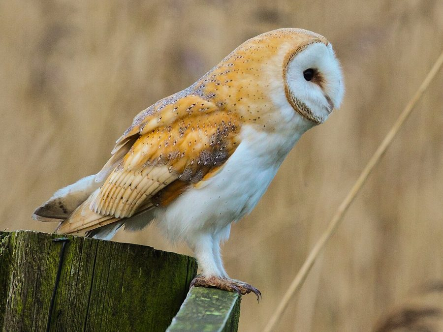

उल्लूBarn Owl
Tyto alba · Tytonidae · BRD-0050

- Scientific name
- Tyto alba (Scopoli, 1769)
- Family
- Tytonidae
- Hindi
- उल्लू
- Status here
- native
- IUCN
- LC
When to look कब देखें
Present all year.
उल्लू / Barn Owl
Tyto alba (Scopoli, 1769) — Tytonidae
उल्लू (बार्न उल्लू / सफ़ेद उल्लू) — पूर्वी उत्तर प्रदेश के पुराने भवनों, मंदिरों, अनाज के गोदामों और खंडहरों में रहने वाला एक अत्यंत रहस्यमयी और पूरी तरह से रात्रिचर (nocturnal) शिकारी पक्षी है। इसकी सबसे बड़ी पहचान इसका दिल के आकार का सफ़ेद चेहरा (heart-shaped white facial disc), पूरी तरह से चमकीला सफ़ेद पेट और छाती, तथा पीठ का सुनहरा-भूरा (golden-buff) रंग है। यह पूर्ण अंधकार में भी उड़ने और बारीक से बारीक आवाजों को सुनने में सक्षम है। इसके पंखों के किनारों पर कंघी जैसी विशेष संरचना (comb-like fringes) होती है जो हवा के घर्षण की आवाज को सोख लेती है, जिससे इसकी उड़ान पूरी तरह से मौन (silent flight) होती है और शिकार को इसके आने की आहट तक नहीं मिलती। एक उल्लू का परिवार प्रति वर्ष 1,000 से अधिक चूहों को खा सकता है, जिससे यह अनाज के भंडारों में फसलों की सुरक्षा करने वाला एक अमूल्य रक्षक है। इसकी भयानक फुसफुसाहट और खर्राटे जैसी आवाजें पुराने मंदिर के शिखरों और खाली घरों से सुनाई देती हैं।
Quick Identification त्वरित पहचान
| Feature | Description |
|---|---|
| Size | Medium-sized owl (34–38 cm total length); wingspan around 85–95 cm |
| Face | Striking heart-shaped white facial disc with a brown border; eyes are relatively small and dark |
| Colouration | Pale golden-buff upperparts speckled with grey and white; pure white underparts with tiny black dots |
| Flight | Eerie, silent, ghost-like flight; often appears completely white from below at night |
| Bare Parts | Pale pinkish-horn bill; legs are long and feathered down to the pinkish-grey toes |
| Sounds | Does not hoot; produces a blood-curdling screech or a dry, hissing rattle |
Field tip: Look for them roosting in dark, quiet corners of old buildings, abandoned brick kilns, or hollows of large trees during the day. Under their roosting spots, you will find regurgitated pellets containing bones and fur. The female is larger than the male and is shown in the field tip.
Morphology आकारिकी
Biometrics (typical measurements in the northern Indian plains showing reverse sexual size dimorphism):
| Measurement | Range |
|---|---|
| Total length (Male) | 330–360 mm |
| Total length (Female) | 350–380 mm |
| Wingspan (Male) | 800–900 mm |
| Wingspan (Female) | 850–950 mm |
| Wing (Male) | 275–300 mm |
| Wing (Female) | 285–315 mm |
| Tail (Male) | 110–120 mm |
| Tail (Female) | 115–125 mm |
| Tarsus (Male) | 65–72 mm |
| Tarsus (Female) | 68–75 mm |
| Bill (Male) | 30–33 mm |
| Bill (Female) | 31–34 mm |
| Weight (Male) | 280–350 g |
| Weight (Female) | 320–420 g |
Plumage: The upperparts are a beautiful blend of soft golden-orange and light grey, covered with fine dark vermiculations and white spots. The facial disc is pure white, bordered by a narrow collar of buff and brown feathers. The underparts, including the underwing coverts, are silky white (sometimes warm buff in females), dotted with small blackish spots. The flight feathers and tail are barred with dark grey-brown.
Bare parts: The bill is light pinkish-horn or cream-coloured. The eyes are dark brown, almost black, set forward in the facial disc. The long legs are covered in white feathers, and the toes are brownish-grey, armed with extremely long, sharp, black claws.
Vocalisations
Barn Owls do not make the typical "hoot" sound of true owls.
- Screech call: A loud, harsh, drawn-out shriek, shreeee-shreeee, repeated during flight at night, which is often considered frightening in local folklore.
- Hissing call: A long, dry, snake-like rattle or hiss, khhh-khhh, produced from the nest or roost when threatened.
Behaviour & Ecology व्यवहार और पारिस्थितिकी
- Hunting style: A nocturnal search hunter. It flies low over agricultural fields and grassy margins, using its asymmetrical ear openings to detect the movements of rodents beneath the crop cover. It drops silently onto the target, crushing it with its talons.
- Flight mechanism: The wing feathers have soft, comb-like edges that break up air turbulence, allowing silent flight. This prevents the prey from hearing the owl and reduces noise interference for the owl's own ears.
- Roosting: Deeply nocturnal. Rests during the day in complete darkness, sitting upright on ledges, rafters, or inside large cavities.
Life Cycle / Phenology जीवन चक्र
- Pair-bond: Monogamous; pairs often remain together for life and occupy the same roosting site year after year.
- Breeding season: Nesting can occur year-round in northern India, but peaks between November and March when rodent activity is high.
- Nesting: They do not build nests. They lay eggs directly on the accumulated debris, dust, or owl pellets inside cavities.
- Nest site: Built on dark ledges of old temples, village grain stores, water towers, or hollow trunks of old Banyan or Peepal trees.
- Clutch size: 4 to 7 pure white, oval eggs.
- Incubation: 30–34 days, performed exclusively by the female while the male hunts.
- Fledging: Nestlings fledge in about 50–55 days and remain dependent on the parents for hunting practice.
Host Plants or Prey आहार
Primary food items:
- Mammals: Feeds almost entirely on small mammals. Primarily the Lesser Bandicoot Rat (Bandicota bengalensis), house rats (Rattus rattus), house mice, and shrews (Suncus murinus).
- Vertebrates: Occasional small birds, frogs, and large beetles.
Predators / Natural Enemies शत्रु
- Larger raptors: Large owls like the Indian Eagle-Owl (Bubo bengalensis) can prey on Barn Owls.
- Corvids: House Crows (Corvus splendens) mob Barn Owls if they are exposed during the day, forcing them into cover.
- Reptiles: Large water snakes and pythons may raid nests in old ruins.
Agricultural / Human Relevance कृषि प्रासंगिकता
Critical rodent control. The Barn Owl is one of the most economically valuable birds for rural communities in Basti. One family of Barn Owls can clear thousands of rats and mice from grain warehouses and crop fields, protecting stored grain from destruction.
Citizen Science Activity — Pellet Dissection: Barn Owls swallow their prey whole and regurgitate indigestible fur and bones as compact, black, varnished-looking pellets. Collecting these pellets from under roosting sites and dissecting them in water is an excellent citizen science activity. It allows students to count skull bones and identify what rodent species the owl has eaten.
Superstitious threats: In rural UP, owls are often feared due to associations with black magic and bad omens, leading to nesting trees being cut or birds being targeted. Educating villagers about their role in rodent control is essential.
Conservation and legal status: Protected under Schedule IV of the Wildlife Protection Act, 1972. They are highly vulnerable to secondary poisoning from chemical rat poisons (rodenticides) used in houses and barns.
Expected Locally स्थानीय रूप से अपेक्षित
Not a field record. Written from published accounts for eastern Uttar Pradesh. No confirmed local sighting yet — if you have seen it, that is what the atlas needs.
अभी तक स्थानीय पुष्टि नहीं। यह विवरण प्रकाशित स्रोतों से है, किसी अवलोकन से नहीं।
Frequently observed in Basti district's rural areas, particularly around old grain silos, abandoned sugar mills, and old brick kilns. They are also common in the high shikhars of old village temples. Their screaming calls at night are a regular sound near village margins.
Distribution वितरण
Global range: A cosmopolitan species found on all continents except Antarctica.
In India: Widespread resident throughout the plains and hills of the entire country.
In Uttar Pradesh: Common resident in all agricultural, urban, and semi-rural districts.
In Basti district / eastern UP: Observed year-round in old structures and village borders across all blocks.
Research Questions शोध प्रश्न
Anyone can investigate these | कोई भी इन प्रश्नों की जाँच कर सकता है
- How many rodent skulls can be found in a sample of ten Barn Owl pellets collected from a Basti grain store? / बस्ती के एक अनाज गोदाम से एकत्र किए गए दस उल्लू के पेलेट्स (pellets) में चूहों की कितनी खोपड़ियाँ मिलती हैं? — Collect, dissect, and catalog bones.
- Do Barn Owls prefer old brick kilns over tree hollows for roosting in your block? — Map and count active roosts.
- What is the frequency of Barn Owl screech calls during a three-hour period after sunset? — Conduct audio surveys to record nocturnal activity patterns.
- How do Barn Owls react to the presence of nesting pigeons in the same building rafter? — Document cohabitation and nesting success rates.
- Does the use of chemical rodenticides in a village correspond to a decrease in Barn Owl sightings? / क्या किसी गाँव में रासायनिक चूहे मारने वाली दवाओं के उपयोग से बार्न उल्लू के दिखने में कमी आती है? — Survey farmers and map sightings.
Similar Species मिलती-जुलती प्रजातियाँ
| Species | Key Difference | हिंदी |
|---|---|---|
| Spotted Owlet (Athene brama) | Much smaller (19–21 cm); grey-brown with white spots; yellow eyes; lacks heart-shaped facial disc | चित्तीदार उल्लू — छोटा आकार, पीली आँखें, चित्तीदार शरीर |
| Indian Eagle-Owl (Bubo bengalensis) | Much larger; prominent ear tufts; large orange eyes; heavily streaked brown plumage | बड़ा उल्लू — बड़ा आकार, आँख के ऊपर कलगी, नारंगी आँखें |
| Grass Owl (Tyto capensis) | Darker upperparts; longer legs; found only in tall wet grasslands, not in old buildings | घास का उल्लू — गहरे रंग की पीठ, केवल लंबी घास में पाया जाना |
Field rule: Medium-sized ghostly white owl with a distinct heart-shaped white facial disc, dark eyes, and a silent flight near buildings at night is a Barn Owl.
Taxonomy & Classification वर्गीकरण
Original description. Giovanni Antonio Scopoli described the Barn Owl as Strix alba in 1769 in his work Annus I Historico-Naturalis (p. 21). The type locality was Friuli, Italy. The genus name Tyto was introduced by Billberg in 1828, from the Ancient Greek tuto, meaning an owl. The specific name alba is Latin for white, referring to the bird's pale appearance.
Subspecies. Over thirty subspecies are recognized globally. The resident subspecies in the Indian Subcontinent is:
| Subspecies | Authority | Range | Notes |
|---|---|---|---|
| T. a. stertens | Hartert, 1929 | India, Pakistan, Nepal, Bangladesh, Sri Lanka, Myanmar | UP subspecies; larger and has darker grey markings on upperparts than European nominate form T. a. alba |
Family and order placement. Placed in the order Tytoniformes, family Tytonidae. Barn owls are structurally distinct from true owls (Strigidae) and are placed in their own family, Tytonidae.
Phylogenetic notes. Fossil records show that the family Tytonidae is an ancient lineage of raptors that diverged from Strigidae during the Eocene period.
IUCN status rationale. Listed as Least Concern (LC). The species has an extremely large global range, stable population dynamics, and is highly adaptable to human-modified agricultural landscapes.
Photo Gallery फोटो गैलरी
References संदर्भ
- Scopoli, G. A. (1769). Annus I Historico-Naturalis. Lipsiae, p. 21. [original description]
- Ali, S. & Ripley, S. D. (1999). Handbook of the Birds of India and Pakistan. Vol. 3. Oxford University Press, New Delhi.
- Grimmett, R., Inskipp, C. & Inskipp, T. (2011). Birds of the Indian Subcontinent. 2nd ed. Christopher Helm, London.
- Taylor, I. (1994). Barn Owls: Predator-Prey Relationships and Conservation. Cambridge University Press, Cambridge.
- BirdLife International (2024). Tyto alba. IUCN Red List of Threatened Species. Ver. 2024.
- GBIF Occurrence Data — Tyto alba, Uttar Pradesh (2010–2025).
Source file: species/fauna/birds/barn_owl.md